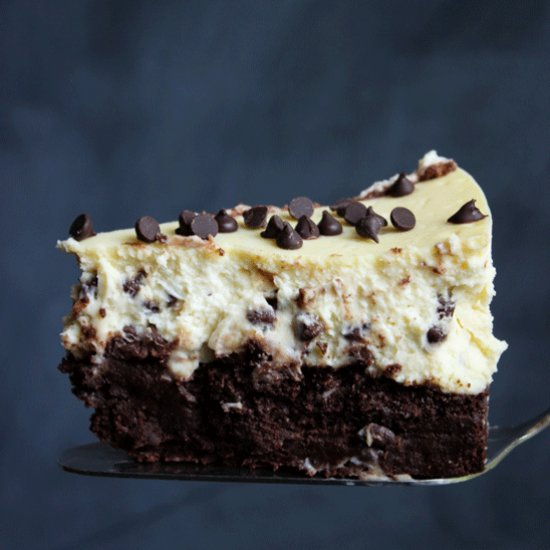

Brownie Chocolate Chip Cheesecake

A cream cheese filling tops a crust of chewy chocolate fudge brownies. Garnish with mini chocolate chips.
Ingredients
- 1 (19.5 ounce) package Pillsbury® Classic Traditional Fudge Brownies
- 3 (8 ounce) packages cream cheese, softened
- 1 (14 ounce) can EAGLE BRAND® Sweetened Condensed Milk
- 3 large eggs large eggs
- 2 teaspoons vanilla extract
- ½ cup mini chocolate chips
Steps
- Preheat oven to 350 degrees F. Grease bottom only of 9-inch springform pan. Prepare brownie mix as package directs for chewy brownies. Spread evenly in prepared pan. Bake 35 minutes or until set.
- In large mixing bowl, beat cream cheese until fluffy. Gradually beat in sweetened condensed milk. Add eggs and vanilla; mix well. Stir in chocolate chips. Pour into prepared pan.
- Reduce oven temperature to 300 degrees F. Bake 50 minutes or until set. Cool. Chill thoroughly. Remove side of springform pan. Garnish as desired. Store leftovers covered in refrigerator.